Lesespaziergang DaZ: Wir backen – Wortschatz mit Rätseln, 3-fach differenziert (Klasse 1–4)

Lesespaziergang DaZ: Spielen im Schnee – Wortschatz mit Rätseln, 3-fach differenziert (Klasse 1–4)

Lesespaziergang DaZ: Gemüse – Wortschatz mit Rätseln, 3-fach differenziert (Klasse 1–4)

Lesespaziergang DaZ: Sankt Martin – Wortschatz mit Rätseln, 3-fach differenziert (Klasse 1–4)

3D-Anhänger Herbst – Oktaeder, Diamant und Kugel zum Ausmalen und Basteln, 3-fach differenziert (Klasse 3/4)

Materialpaket Advent für die 5. Klasse: 3 Lesespurgeschichten mit Rätselaufgaben (Weihnachtsstern, Plätzchen backen, Handnähen)

Materialpaket Winter für die 9. Klasse: 5 Lesespurgeschichten mit Rätselaufgaben fächerübergreifend (Hungerwinter 1947, Permafrost, Christbaummarkt & mehr)

Materialpaket Winter und Advent für die 8. Klasse: 10 Lesespurgeschichten mit Rätselaufgaben fächerübergreifend (Polarlichter, Streusalz, Krippenbau & mehr)

Materialpaket Winter und Advent für die 7. Klasse: 10 Lesespurgeschichten mit Rätselaufgaben fächerübergreifend (Weihnachtsoratorium, Südpol, Eishockey & mehr)

Materialpaket Advent und Winter für die 6. Klasse: 7 Lesespurgeschichten mit Rätselaufgaben (Weihnachtsbasar, Saturnalien, Lichterfeste & mehr)

Materialpaket Rechenwelten im Winter für die 4. Klasse: 5 Mathe-Rollenspiele, 3-fach differenziert (Wintertombola, Schneeburg, Paketstation & mehr)

Materialpaket Rechenwelten im Winter für die 3. Klasse: 8 Mathe-Rollenspiele, 3-fach differenziert (Weihnachtsbäckerei, Lichterpark, Eisbahn & mehr)

Materialpaket Rechenwelten im Winter für die 2. Klasse: 6 Mathe-Rollenspiele, 3-fach differenziert (Weihnachtsmarkt, Kinderkino, Lebkuchen & mehr)

Materialpaket Rechenwelten im Winter für die 1. Klasse: 5 Mathe-Rollenspiele, 3-fach differenziert (Adventsmarkt, Plätzchenbäckerei, Wildpark & mehr)

Materialpaket Winter und Advent für die 4. Klasse: 5 Lesespurgeschichten mit Rätselaufgaben (Weihnachtsmarkt, Fröbelsterne, Sternbilder & mehr)

Materialpaket Schnee, Eis und Wintersport für die 3. Klasse: 10 Lesespurgeschichten mit Rätselaufgaben (Rodelbahn, Eisstock, Schneelabor & mehr)

Materialpaket Natur im Winter für die 3. Klasse: 10 Lesespurgeschichten mit Rätselaufgaben (Wintertiere, Winterwald, Schneespuren & mehr)

Materialpaket Advent und Weihnachten für die 3. Klasse: 8 Lesespurgeschichten mit Rätselaufgaben (Barbarazweige, Lebkuchen, Santa Lucia, Sternsinger & mehr)

Materialpaket Feste im Winter für die 2. Klasse: 6 Lesespurgeschichten mit Rätselaufgaben (Sankt Martin, Nikolaus, Advent, Weihnachten & Silvester)

Das Reisebüro: Winterreise in die Berge – Rollenspiel Maßstab, Kilometer und Meter, 3-fach differenziert (Klasse 4)

3D-Anhänger Winter – Oktaeder, Diamant und Kugel zum Ausmalen und Basteln, 3-fach differenziert (Klasse 3/4)

3D-Anhänger Advent – Oktaeder, Diamant und Kugel zum Ausmalen und Basteln, 3-fach differenziert (Klasse 3/4)

Die große Winter-Umfrage – Rollenspiel Daten, Tabellen und Säulendiagramme, 3-fach differenziert (Klasse 3)

Der Spielzeugladen vor Weihnachten – Rollenspiel Münzen und Scheine bis 20 €, 3-fach differenziert (Klasse 1)

Der Weg durchs Wichteldorf – Rollenspiel Wege, Lagewörter und Schritte zählen, 3-fach differenziert (Klasse 1)

Das Weihnachtspostamt – Rollenspiel Rechnen mit Euro und Cent, gemischte Schreibweise, 3-fach differenziert (Klasse 2)

Igel im Laubnest – Klappnest basteln mit Sachtext Winterschlaf, 3-fach differenziert (Tiere im Herbst, Klasse 1/2)

St.-Martins-Laterne aus einem Blatt – falten, einschneiden, rollen, mit Martinsgeschichte, 3-fach differenziert (Klasse 2/3)

Herbst-Klappkarte Eichhörnchen – Figurenkarte basteln mit Sachtext, 3-fach differenziert (Tiere im Herbst, Klasse 2/3)

Flatter-Fledermaus am Stab – bewegliche Bastelfigur mit Sachtext, 3-fach differenziert (Halloween/Herbst, Klasse 2/3)

Der Kürbis von innen – Klapp-Kürbis basteln und beschriften, 3-fach differenziert (Halloween/Herbst, Klasse 1/2)

Halloween-Ziehkarten – Präpositionen sichtbar machen: über, vor, neben, auf, 3-fach differenziert (Klasse 1/2, DaZ)

Spinnen-Rätsel-Faltkarte – Halloween-Rätsel lesen und schreiben, Pop-up-Spinne, 3-fach differenziert (Klasse 2/3)

Mein Grusel-Meter – Halloween-Drehkarte basteln, Adjektive steigern und vergleichen, 3-fach differenziert (Klasse 2/3)

Halloween-Hüpffiguren – 6 Bastelvorlagen mit Federkugel, Steckbrief und Geschichte, 3-fach differenziert (Klasse 1/2)

Halloween Wackel-Skelett – Bastelvorlage, Sachtext Skelett und Knochen beschriften, 3-fach differenziert (Klasse 3/4)

Halloween-Armbanduhr aus Papier – Uhrzeit lernen mit Bastelvorlage, 3-fach differenziert (Klasse 2/3)

3D-Zauberbild Lebensraum Wald – Umkehrperspektive basteln, Sachtext und Forscherauftrag, 3-fach differenziert (Klasse 3/4)

Klapp-Spukhaus zu Halloween – Bastelvorlage mit Schreibanlass und Wortspeicher, 3-fach differenziert (Klasse 3/4)

Halloween-Kegelfiguren – Körper Kegel basteln und erforschen, 3-fach differenziert (Mathematik/Kunst Klasse 3/4)

Halloween-Handpuppen – Bastelvorlage mit Sachtext und Puppentheater, 3-fach differenziert (Klasse 1/2)

Fingerpuppen Wintertiere – Bastelvorlage mit Sachtext und Sprechaufgaben, 3-fach differenziert (Klasse 1/2)

Pop-up-Karten Weihnachten – Bastelvorlage mit Stufen-Pop-up, Motiven und Weihnachtsgruß, 3-fach differenziert (Klasse 3/4)

Wimpelkette Winter – Bastelvorlage mit Wintermotiven, Buchstaben WINTER und eigenen Wimpeln, 3-fach differenziert (Klasse 1–4)

Advents-Häuserstadt – Klassen-Adventskalender zum Basteln mit 24 Adventsaufgaben, 3-fach differenziert (Klasse 1–4)

Papier-Schneeflocken falten und schneiden – Winter-Bastelvorlage mit Sachtext, 3-fach differenziert (Klasse 2/3)

Fensterlaterne Sankt Martin – Laterne basteln mit Lesetext zur Legende, 3-fach differenziert (Klasse 1–3)

3D-Anhänger Halloween – Oktaeder, Diamant und Kugel zum Ausmalen und Basteln, 3-fach differenziert (Klasse 3/4)

Spiral-Gespenster zum Aufhängen – Halloween-Bastelvorlage mit Lesetext, 3-fach differenziert (Klasse 2/3)

Gespensterhaus aus meiner Hand – Halloween-Bastelvorlage mit Lesen und Schreiben, 3-fach differenziert (Klasse 1/2)
La panadería de jengibre – Rollenspiel Einmaleins und Teilen auf Spanisch, 3-fach differenziert (Klasse 2)
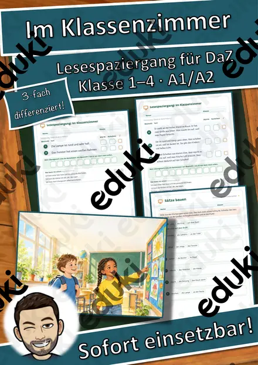
Lesespaziergang DaZ: Im Klassenzimmer – Wortschatz mit Rätseln, 3-fach differenziert (Klasse 1–4)

The Gingerbread Bake Shop – Rollenspiel Einmaleins und Teilen auf Englisch, 3-fach differenziert (Klasse 2)
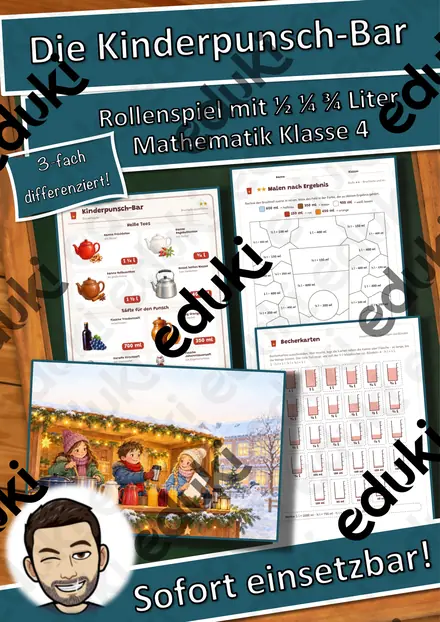
Die Kinderpunsch-Bar – Rollenspiel Brüche in Größen: ½ l, ¼ l, ¾ l und Milliliter, 3-fach differenziert (Klasse 4)

Das Schneeburg-Baubüro – Rollenspiel Würfelbauten, Baupläne und Rauminhalt, 3-fach differenziert (Klasse 4)

Das Glücksrad der Wintertombola – Rollenspiel Gewinnchancen und Wahrscheinlichkeit, 3-fach differenziert (Klasse 4)

Der Wintersporttag – Rollenspiel Sekunden, Minuten und Sekunden umwandeln, Rangliste, 3-fach differenziert (Klasse 4)

Bohren an der Ständerbohrmaschine – sicher und genau – Lesespurgeschichte mit Rätselaufgaben (Klasse 7)

Der Hofladen im Winter – Rollenspiel Hohlmaße l und ml, 3-fach differenziert (Klasse 4)
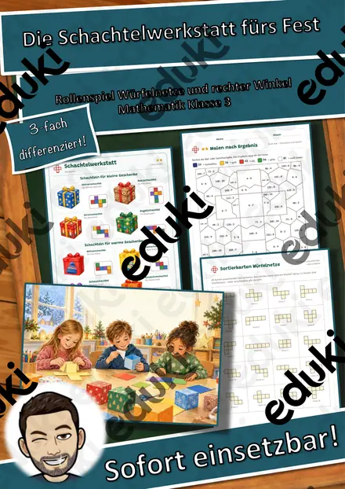
Die Schachtelwerkstatt fürs Fest – Rollenspiel Würfelnetze und rechter Winkel, 3-fach differenziert (Klasse 3)
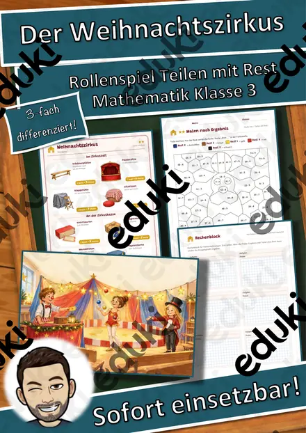
Der Weihnachtszirkus – Rollenspiel Division mit Rest, 3-fach differenziert (Klasse 3)
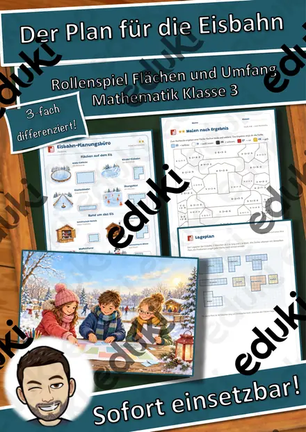
Der Plan für die Eisbahn – Rollenspiel Lagepläne, Flächen und Umfang, 3-fach differenziert (Klasse 3)
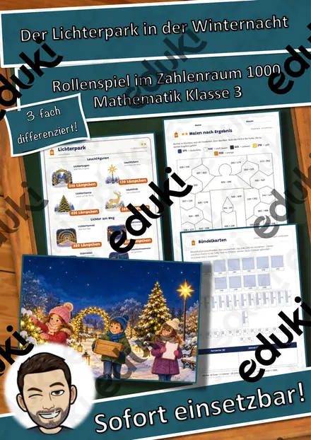
Der Lichterpark in der Winternacht – Rollenspiel Zahlenraum bis 1000, halbschriftlich und schriftlich rechnen, 3-fach differenziert (Klasse 3)
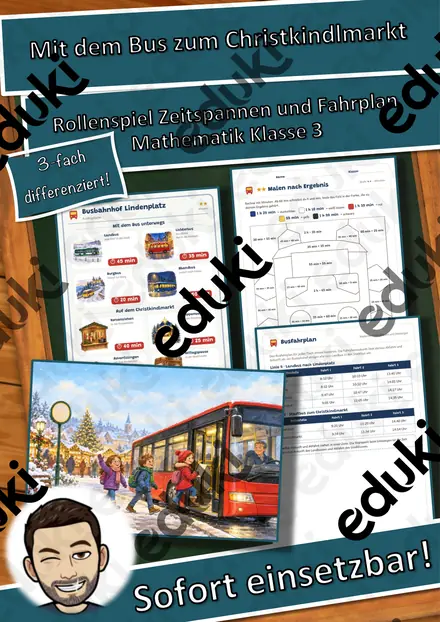
Mit dem Bus zum Christkindlmarkt – Rollenspiel Zeitspannen, Busfahrplan und Umsteigen, 3-fach differenziert (Klasse 3)
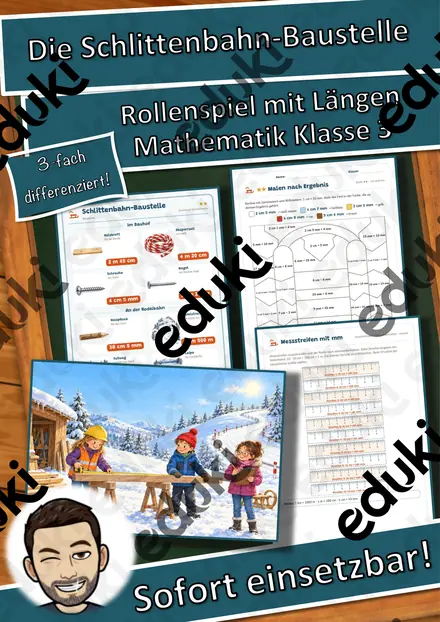
Die Schlittenbahn-Baustelle – Rollenspiel Längen km, m, cm und mm, 3-fach differenziert (Klasse 3)
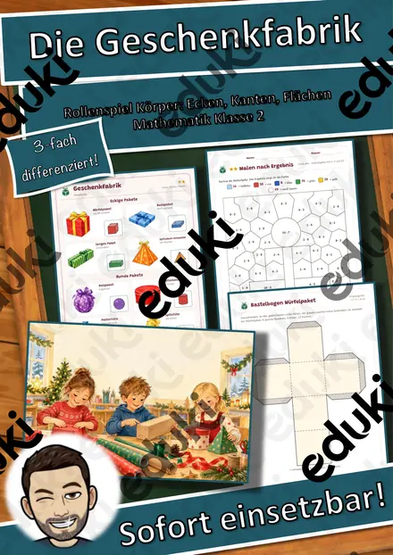
Die Geschenkfabrik – Rollenspiel Körper, Ecken, Kanten und Flächen, 3-fach differenziert (Klasse 2)
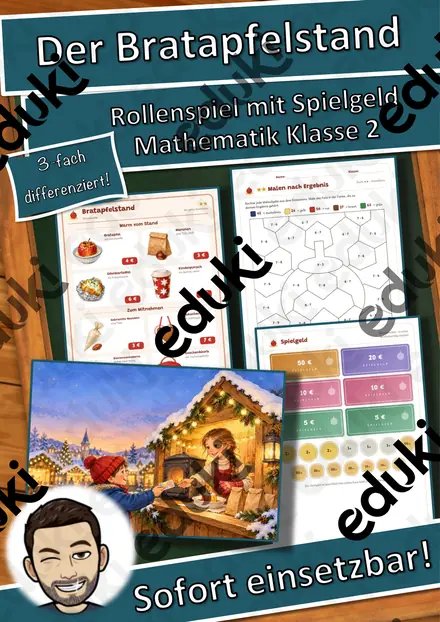
Der Bratapfelstand – Rollenspiel Einmaleins mit Geld, Euro und Cent, 3-fach differenziert (Klasse 2)
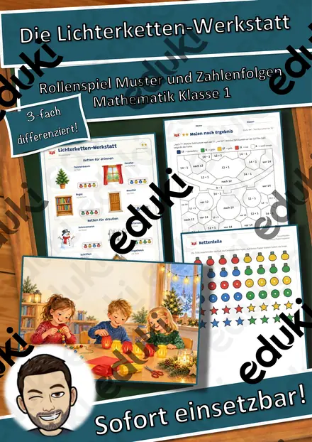
Die Lichterketten-Werkstatt – Rollenspiel Muster und Zahlenfolgen, 3-fach differenziert (Klasse 1)
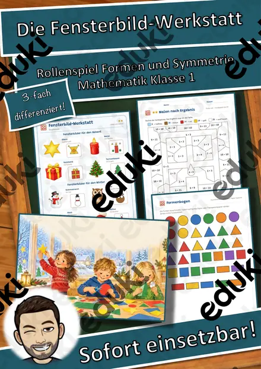
Die Fensterbild-Werkstatt – Rollenspiel Formen, Muster und Symmetrie, 3-fach differenziert (Klasse 1)
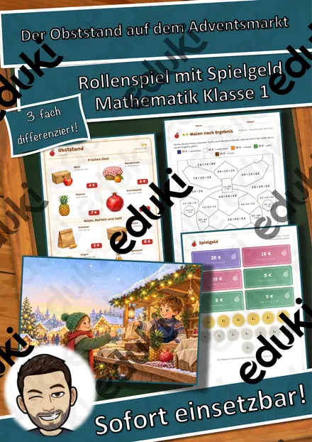
Der Obststand auf dem Adventsmarkt – Rollenspiel Rechnen mit Geld bis 20 €, Rückgeld, 3-fach differenziert (Klasse 1)

The Quiet Snowy Forest – Lesespurgeschichte mit Rätselaufgaben auf Englisch (Klasse 6)

Christmas Tree Farm – Lesespurgeschichte mit Rätselaufgaben auf Englisch (Klasse 6)

Breaking Through the Ice – Lesespurgeschichte mit Rätselaufgaben auf Englisch (Klasse 6)

Der Hund – unser treues Haustier – Lesespurgeschichte mit Rätselaufgaben (Klasse 5)

Winter Wildlife Trail – Lesespurgeschichte mit Rätselaufgaben auf Englisch (Klasse 6)

Die Wärmedämmung – wo das Haus Wärme verliert – Lesespurgeschichte mit Rätselaufgaben (Klasse 9)

Das Lebkuchenhaus – Quader, Netz und Oberfläche – Lesespurgeschichte mit Rätselaufgaben (Klasse 7)

Umtausch nach Weihnachten – Gewährleistung, Garantie und Kulanz – Lesespurgeschichte mit Rätselaufgaben (Klasse 8)

Die Märzrevolution 1848 – Freiheit, Einheit und die Paulskirche – Lesespurgeschichte mit Rätselaufgaben (Klasse 8)

Der Vorlesetag – gut vorlesen, gespannt zuhören – Lesespurgeschichte mit Rätselaufgaben (Klasse 6)

Aschermittwoch und Fastenzeit – vom Fasching bis Ostern – Lesespurgeschichte mit Rätselaufgaben (Klasse 6)

Der Tag der Muttersprache – viele Sprachen in meiner Klasse – Lesespurgeschichte mit Rätselaufgaben (Klasse 5)

Gute Vorsätze – was ich ändern will – Lesespurgeschichte mit Rätselaufgaben (Klasse 8)

Der Tag der Menschenrechte – Rechte für alle Menschen – Lesespurgeschichte mit Rätselaufgaben (Klasse 10)

Der Kaminofen – Verbrennung und Kohlenmonoxid – Lesespurgeschichte mit Rätselaufgaben (Klasse 8)

Der Jahresrückblick – eine Radiosendung entsteht – Lesespurgeschichte mit Rätselaufgaben (Klasse 7)

Lesespaziergang: Frühblüher im Garten und im Wald – 3-fach differenziert (★/★★/★★★), Klasse 2–4

Potato Harvest on the Farm – Lesespurgeschichte mit Rätselaufgaben auf Englisch (Klasse 6)

Die Lichterkette – Reihenschaltung und Parallelschaltung – Lesespurgeschichte mit Rätselaufgaben (Klasse 8)

Die Novemberrevolution 1918 – vom Kaiserreich zur Demokratie – Lesespurgeschichte mit Rätselaufgaben (Klasse 9)

Lesespaziergang: Verkleiden und Feiern im Fasching – 3-fach differenziert (★/★★/★★★), Klasse 2–4

Die erste Steuererklärung – Lohnsteuer, Werbungskosten und Erstattung – Lesespurgeschichte mit Rätselaufgaben (Klasse 10)

Lesespaziergang: Tiere in Eis und Wüste – 3-fach differenziert (★/★★/★★★), Klasse 2–4

Richtig lüften im Winter – Luftfeuchtigkeit, Taupunkt und Schimmel – Lesespurgeschichte mit Rätselaufgaben (Klasse 9)

Lesespaziergang: Obst und Gemüse im Winter – 3-fach differenziert (★/★★/★★★), Klasse 2–4

Das große Kürbisfest – Rollenspiel schriftliche Multiplikation und Überschlag, 3-fach differenziert (Klasse 4)

Der Wettlauf zum Südpol – eine Expedition ins ewige Eis – Lesespurgeschichte mit Rätselaufgaben (Klasse 7)

Lesespaziergang: Spuren im Schnee – 3-fach differenziert (★/★★/★★★), Klasse 2–4
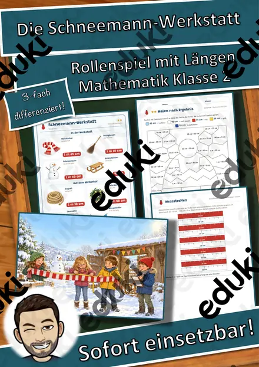
Die Schneemann-Werkstatt – Rollenspiel Längen m und cm, 3-fach differenziert (Klasse 2)

Lesespaziergang: Plätzchen backen im Advent – 3-fach differenziert (★/★★/★★★), Klasse 2–4
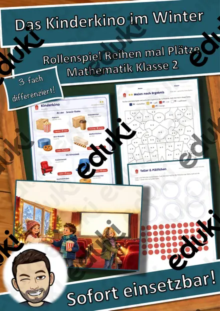
Das Kinderkino im Winter – Rollenspiel Einmaleins und Verteilen, 3-fach differenziert (Klasse 2)
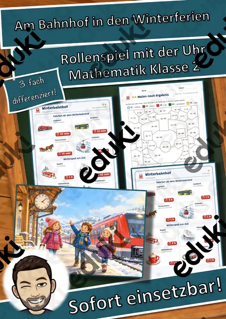
Am Bahnhof in den Winterferien – Rollenspiel Uhrzeit und Zeitspannen, 3-fach differenziert (Klasse 2)
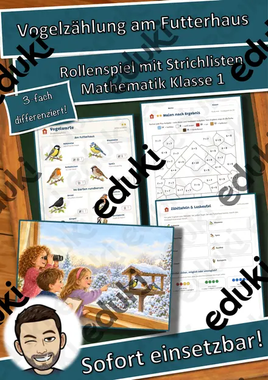
Vogelzählung am Futterhaus – Rollenspiel Strichlisten auswerten und vergleichen, 3-fach differenziert (Klasse 1)
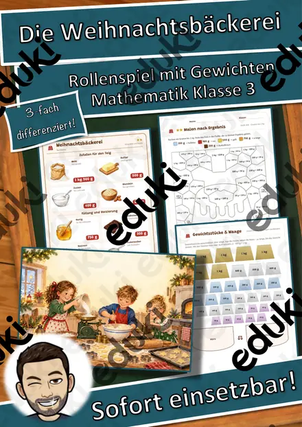
Die Weihnachtsbäckerei – Rollenspiel Gewichte kg und g, Rezepte verdoppeln, 3-fach differenziert (Klasse 3)
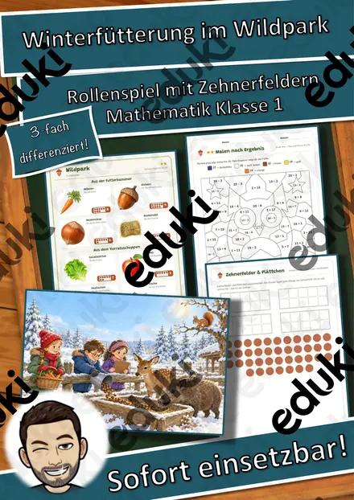
Winterfütterung im Wildpark – Rollenspiel Zahlen bis 20 zählen, zerlegen und ergänzen, 3-fach differenziert (Klasse 1)

Lesespaziergang: Zugvögel im Herbst – 3-fach differenziert (★/★★/★★★), Klasse 2–4

Lesespaziergang: Blätter und Bäume im Herbst – 3-fach differenziert (★/★★/★★★), Klasse 2–4
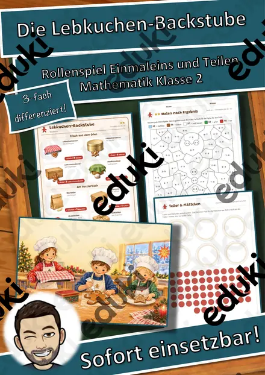
Die Lebkuchen-Backstube – Rollenspiel Einmaleins und Teilen, 3-fach differenziert (Klasse 2)
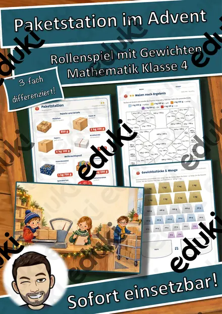
Paketstation im Advent – Rollenspiel Gewichte kg, g und t, Malnehmen mit Größen, 3-fach differenziert (Klasse 4)
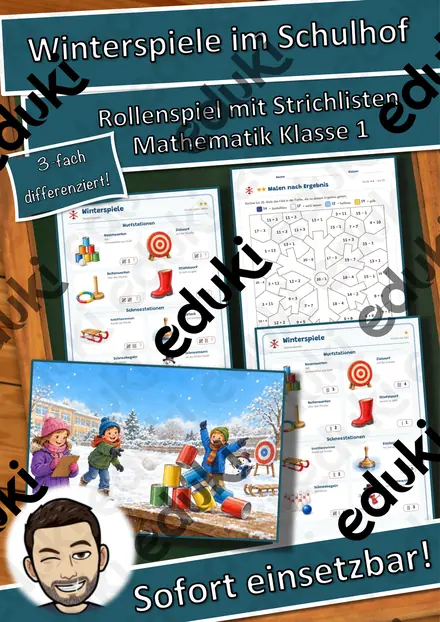
Winterspiele im Schulhof – Rollenspiel Strichlisten, Vergleichen, sicher – möglich – unmöglich, 3-fach differenziert (Klasse 1)
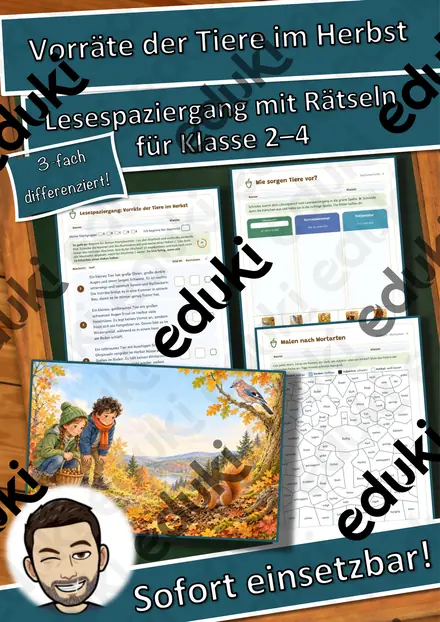
Lesespaziergang: Vorräte der Tiere im Herbst – 3-fach differenziert (★/★★/★★★), Klasse 2–4
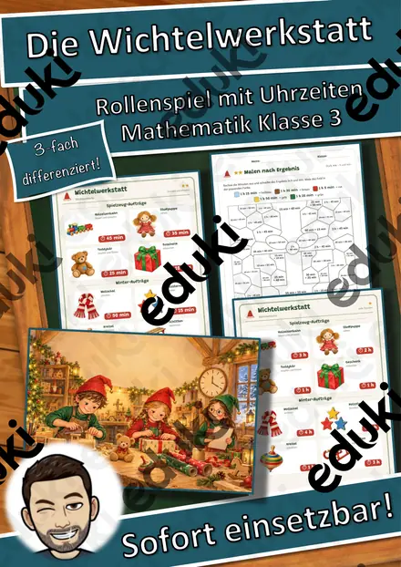
Die Wichtelwerkstatt – Rollenspiel Zeitspannen, Anfang und Ende berechnen, 3-fach differenziert (Klasse 3)
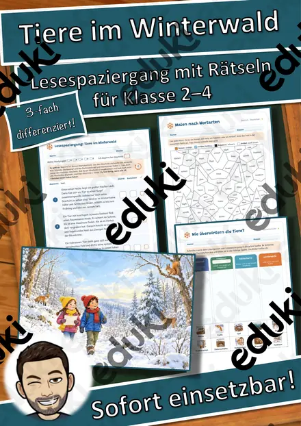
Lesespaziergang: Tiere im Winterwald – 3-fach differenziert (★/★★/★★★), Klasse 2–4
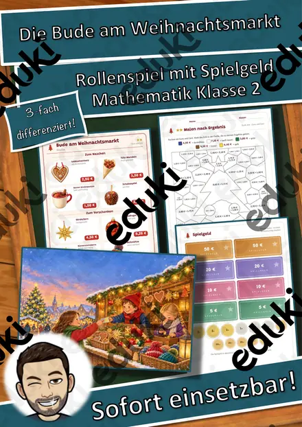
Die Bude am Weihnachtsmarkt – Rollenspiel Rechnen mit Geld, Euro und Cent, 3-fach differenziert (Klasse 2)
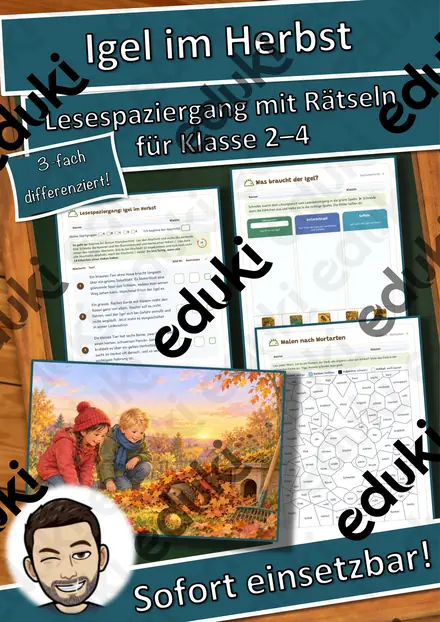
Lesespaziergang: Igel im Herbst – 3-fach differenziert (★/★★/★★★), Klasse 2–4
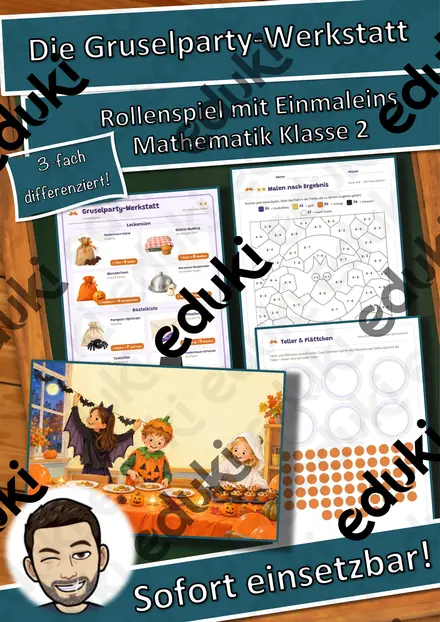
Die Gruselparty-Werkstatt – Rollenspiel Einmaleins und Verteilen, 3-fach differenziert (Klasse 2)
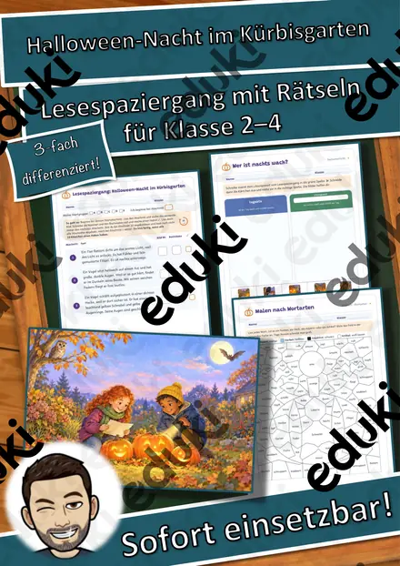
Lesespaziergang: Halloween-Nacht im Kürbisgarten – 3-fach differenziert (★/★★/★★★), Klasse 2–4
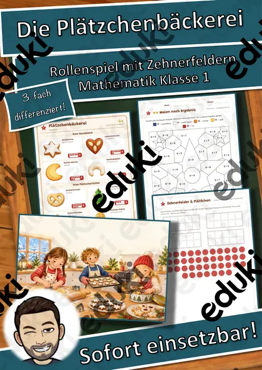
Die Plätzchenbäckerei – Rollenspiel Zahlen bis 20, Verdoppeln und Halbieren, 3-fach differenziert (Klasse 1)
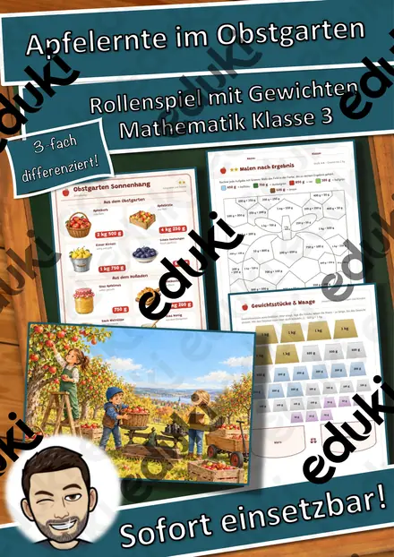
Apfelernte im Obstgarten – Rollenspiel Gewichte kg und g, 3-fach differenziert (Klasse 3)
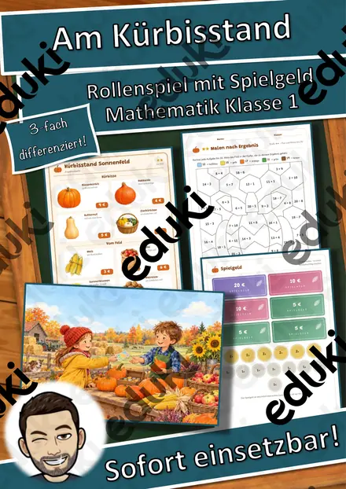
Am Kürbisstand – Rollenspiel Rechnen mit Geld bis 20 €, 3-fach differenziert (Klasse 1)
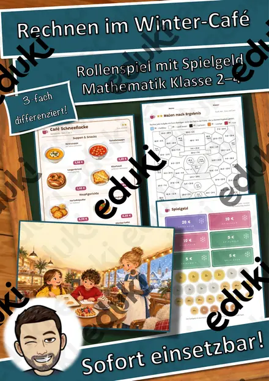
Rechnen im Winter-Café – Rollenspiel Rechnen mit Geld, 3-fach differenziert (Klasse 2–4)

Inside an Apple Tree – Lesespurgeschichte mit Rätselaufgaben auf Englisch (Klasse 9)

Materialpaket Herbst-Lesespuren für die 3. Klasse: 7 Lesespurgeschichten mit Rätselaufgaben (Kürbis, Igel, Laterne, Halloween & mehr)

Der Equal Pay Day – warum Frauen weniger verdienen – Lesespurgeschichte mit Rätselaufgaben (Klasse 9)

Lantern Night Adventure – Lesespurgeschichte mit Rätselaufgaben auf Englisch (Klasse 7)

Ostereier natürlich färben – Farbstoffe und Indikatoren – Lesespurgeschichte mit Rätselaufgaben (Klasse 8)

Weltwassertag – das versteckte Wasser in Alltagsdingen – Lesespurgeschichte mit Rätselaufgaben (Klasse 7)

Bärlauch – Frühlingskraut mit giftigen Doppelgängern – Lesespurgeschichte mit Rätselaufgaben (Klasse 6)

Der Nistkasten – ein Zuhause für Meisen bauen – Lesespurgeschichte mit Rätselaufgaben (Klasse 5)

Ramadan und Zuckerfest – Lesespurgeschichte mit Rätselaufgaben (Klasse 4)

Frühlingsanfang – Tag und Nacht sind gleich lang – Lesespurgeschichte mit Rätselaufgaben (Klasse 3)

Ostern – Bräuche rund ums Osterfest – Lesespurgeschichte mit Rätselaufgaben (Klasse 2)

Die Inventur – zählen, wiegen, vergleichen – Lesespurgeschichte mit Rätselaufgaben (Klasse 8)

Warum Eis schwimmt – die Anomalie des Wassers – Lesespurgeschichte mit Rätselaufgaben (Klasse 7)

Handwärmer – wie Wärme aus der Tasche entsteht – Lesespurgeschichte mit Rätselaufgaben (Klasse 8)

Polarlichter – wenn der Himmel grün leuchtet – Lesespurgeschichte mit Rätselaufgaben (Klasse 8)

Hefeteig – Ofen-Krapfen für die Faschingsfeier – Lesespurgeschichte mit Rätselaufgaben (Klasse 6)

Das Frühlingsfest – Neujahr in China – Lesespurgeschichte mit Rätselaufgaben (Klasse 5)

Fasching, Fastnacht und Karneval – Bräuche in der närrischen Zeit – Lesespurgeschichte mit Rätselaufgaben (Klasse 4)

Die Vogelhochzeit – ein sorbischer Brauch im Januar – Lesespurgeschichte mit Rätselaufgaben (Klasse 3)

Sicher schneiden – Krallengriff, Brückengriff und eine Gemüsesuppe – Lesespurgeschichte mit Rätselaufgaben (Klasse 5)

Sternbilder am Winterhimmel – Orion, Großer Wagen und Polarstern – Lesespurgeschichte mit Rätselaufgaben (Klasse 4)

Die Christrose – eine Blume blüht im Schnee – Lesespurgeschichte mit Rätselaufgaben (Klasse 6)

Der Weihnachtsstern – eine Pflanze aus Mexiko – Lesespurgeschichte mit Rätselaufgaben (Klasse 5)

Volksmusik in den Alpen – Jodeln, Hackbrett und Alphorn – Lesespurgeschichte mit Rätselaufgaben (Klasse 7)

Die Holzbläser – Flöte, Klarinette, Oboe und Fagott – Lesespurgeschichte mit Rätselaufgaben (Klasse 5)

Der Kalender – wie Caesar und Gregor das Jahr ordneten – Lesespurgeschichte mit Rätselaufgaben (Klasse 7)

Der Mann aus dem Eis – ein Gletscherfund aus der Jungsteinzeit – Lesespurgeschichte mit Rätselaufgaben (Klasse 6)

Weihnachtsgewürze – Zimt, Nelke, Vanille & Co. – Lesespurgeschichte mit Rätselaufgaben (Klasse 6)

Verkehrsschilder – Formen, Farben, Bedeutungen – Lesespurgeschichte mit Rätselaufgaben (Klasse 4)

Kaninchen und Meerschweinchen artgerecht halten – Lesespurgeschichte mit Rätselaufgaben (Klasse 5)

Die Saturnalien – das Winterfest der Römer – Lesespurgeschichte mit Rätselaufgaben (Klasse 6)

Merkmale einer Kurzgeschichte – Lesespurgeschichte mit Rätselaufgaben (Klasse 7)

Glocken – vom Guss bis zum Geläut – Lesespurgeschichte mit Rätselaufgaben (Klasse 5)

Das Weihnachtsoratorium – Chor, Arie und Rezitativ – Lesespurgeschichte mit Rätselaufgaben (Klasse 7)

Ein Winter im Dorf des Mittelalters – Bauern und Grundherr – Lesespurgeschichte mit Rätselaufgaben (Klasse 7)

Paketflut im Advent – ein Tag im Paketzentrum – Lesespurgeschichte mit Rätselaufgaben (Klasse 8)

Das neue Smartphone – sicher einrichten – Lesespurgeschichte mit Rätselaufgaben (Klasse 7)

Winterblues – warum uns im Winter das Licht fehlt – Lesespurgeschichte mit Rätselaufgaben (Klasse 8)

Der Hungerwinter 1947 – Leben nach dem Krieg – Lesespurgeschichte mit Rätselaufgaben (Klasse 9)

Der Leserbrief – meine Meinung in der Zeitung – Lesespurgeschichte mit Rätselaufgaben (Klasse 8)

Die Wintersonnenwende – warum der Dezember so dunkel ist – Lesespurgeschichte mit Rätselaufgaben (Klasse 7)

Kältebus und Wärmestube – Hilfe für wohnungslose Menschen im Winter – Lesespurgeschichte mit Rätselaufgaben (Klasse 9)

Eishockey – schnell, hart und fair – Lesespurgeschichte mit Rätselaufgaben (Klasse 7)

Wichern und der Adventskranz – Hilfe für Kinder in Not – Lesespurgeschichte mit Rätselaufgaben (Klasse 7)

Der erste Ferienjob – Jugendarbeitsschutz, Minijob und Lohn – Lesespurgeschichte mit Rätselaufgaben (Klasse 9)

Streusalz und Gefrierpunkt – warum Salz Eis schmelzen lässt – Lesespurgeschichte mit Rätselaufgaben (Klasse 8)

Erste Hilfe bei Kälte – Unterkühlung und Erfrierungen – Lesespurgeschichte mit Rätselaufgaben (Klasse 8)

Krippenbau – eine Weihnachtskrippe entwerfen und gestalten – Lesespurgeschichte mit Rätselaufgaben (Klasse 8)

Ein Festtagsmenü planen – Einkauf, Mengen und Zeitplan – Lesespurgeschichte mit Rätselaufgaben (Klasse 8)

Die Schuldenfalle – Ratenkauf, Handyvertrag und Zahlpause – Lesespurgeschichte mit Rätselaufgaben (Klasse 9)

Nachhaltig schenken – Zeit, Selbstgemachtes und Verpackung ohne Müll – Lesespurgeschichte mit Rätselaufgaben (Klasse 6)

Den Tisch festlich decken – Gedeck, Tischsitten und Tischschmuck – Lesespurgeschichte mit Rätselaufgaben (Klasse 6)

Woher kommt mein Spielzeug – die Weltreise eines Spielzeugautos – Lesespurgeschichte mit Rätselaufgaben (Klasse 8)

Regional oder importiert – Obst und Gemüse im Winter – Lesespurgeschichte mit Rätselaufgaben (Klasse 7)

Flammenfärbung – Metallsalze in der Brennerflamme nachweisen – Lesespurgeschichte mit Rätselaufgaben (Klasse 8)

Weihnachten in anderen Ländern – Bräuche rund um die Welt – Lesespurgeschichte mit Rätselaufgaben (Klasse 2)

Salzteig-Anhänger – formen, trocknen, bemalen – Lesespurgeschichte mit Rätselaufgaben (Klasse 1)

Barbarazweige – der Brauch am 4. Dezember – Lesespurgeschichte mit Rätselaufgaben (Klasse 3)

Elisabeth von Thüringen – Brot, Rosen, Nächstenliebe – Lesespurgeschichte mit Rätselaufgaben (Klasse 4)

Online einkaufen – Widerrufsrecht, Fake-Shops und Rabattfallen – Lesespurgeschichte mit Rätselaufgaben (Klasse 8)

Upcycling – aus Alt mach Neu – Lesespurgeschichte mit Rätselaufgaben (Klasse 6)

Streit schlichten – wir finden eine Lösung – Lesespurgeschichte mit Rätselaufgaben (Klasse 3)

Silvester und Neujahr – Bräuche zum Jahreswechsel – Lesespurgeschichte mit Rätselaufgaben (Klasse 2)

Der Mietvertrag – die erste eigene Wohnung – Lesespurgeschichte mit Rätselaufgaben (Klasse 9)

Advent – warten auf Weihnachten – Lesespurgeschichte mit Rätselaufgaben (Klasse 2)

Löten – meine erste Schaltung – Lesespurgeschichte mit Rätselaufgaben (Klasse 8)

Weben am Webrahmen – Kette, Schuss und Muster – Lesespurgeschichte mit Rätselaufgaben (Klasse 3)

Die Sternsinger – Brauch am Dreikönigstag – Lesespurgeschichte mit Rätselaufgaben (Klasse 3)

Fröbelsterne und Papiersterne falten – Lesespurgeschichte mit Rätselaufgaben (Klasse 4)

Santa Lucia – das Lichterfest im Dezember – Lesespurgeschichte mit Rätselaufgaben (Klasse 3)

Weihnachtsplätzchen backen – Teig, Maße und Hygiene – Lesespurgeschichte mit Rätselaufgaben (Klasse 5)

Gentechnik – Chancen und Risiken abwägen – Lesespurgeschichte mit Rätselaufgaben (Klasse 10)

Die Gleichnisse Jesu – verlorenes Schaf, barmherziger Samariter – Lesespurgeschichte mit Rätselaufgaben (Klasse 3)

Der Ausbildungsvertrag – Probezeit, Urlaub, Rechte und Pflichten – Lesespurgeschichte mit Rätselaufgaben (Klasse 9)

Das Jugendschutzgesetz – Ausgehzeiten, Alkohol, Altersfreigaben – Lesespurgeschichte mit Rätselaufgaben (Klasse 8)

Rauchen und Vapes – warum Nikotin abhängig macht – Lesespurgeschichte mit Rätselaufgaben (Klasse 7)

Metall formen – anreißen, sägen, feilen, biegen – Lesespurgeschichte mit Rätselaufgaben (Klasse 7)

Elektroschrott – was in alten Handys steckt – Lesespurgeschichte mit Rätselaufgaben (Klasse 8)

Die Radfahrprüfung – Vorfahrt, Verkehrszeichen, sicheres Abbiegen – Lesespurgeschichte mit Rätselaufgaben (Klasse 4)

Milch – vom Hof ins Kühlregal – Lesespurgeschichte mit Rätselaufgaben (Klasse 6)

Organspende – eine Entscheidung fürs Leben – Lesespurgeschichte mit Rätselaufgaben (Klasse 7)

Jonglieren – mit Tüchern, Bällen und Ringen – Lesespurgeschichte mit Rätselaufgaben (Klasse 3)

Kalte Küche fürs Klassenbuffet – Salate, Dips und Brotaufstriche – Lesespurgeschichte mit Rätselaufgaben (Klasse 7)

Fast Fashion – der Weg einer Jeans – Lesespurgeschichte mit Rätselaufgaben (Klasse 8)

Stricken mit der Strickliesel – Schnüre für kleine Geschenke – Lesespurgeschichte mit Rätselaufgaben (Klasse 3)

Die Klaviatur – Stammtöne, Halbtöne und Vorzeichen – Lesespurgeschichte mit Rätselaufgaben (Klasse 6)

Handnähen – Säckchen für den Adventskalender – Lesespurgeschichte mit Rätselaufgaben (Klasse 5)

Wassily Kandinsky – wenn Farben klingen – Lesespurgeschichte mit Rätselaufgaben (Klasse 5)

Die Weihnachtsgeschichte – Herberge, Hirten, Sterndeuter – Lesespurgeschichte mit Rätselaufgaben (Klasse 2)

Holzverbindungen – leimen, nageln, schrauben, dübeln – Lesespurgeschichte mit Rätselaufgaben (Klasse 6)

Quali Mathematik Teil A – rechnen ohne Taschenrechner – Lesespurgeschichte mit Prüfungsaufgaben (Klasse 9)

Nikolaus von Myra – Legende und Brauch – Lesespurgeschichte mit Rätselaufgaben (Klasse 2)

Brüche beim Erntefest – Bruchteile erkennen und vergleichen – Lesespurgeschichte mit Rätselaufgaben (Klasse 6)

Rekorde beim Erntefest – Längen, Gewichte und Größen umrechnen – Lesespurgeschichte mit Rätselaufgaben (Klasse 5)

Kastanien zählen – Zehner und Einer bündeln – Lesespurgeschichte mit Rätselaufgaben (Klasse 2)

Herbstgedichte – reimen, vortragen, selbst dichten – Lesespurgeschichte mit Rätselaufgaben (Klasse 3)

Die Samenreise – wie Pflanzen ihre Früchte verbreiten – Lesespurgeschichte mit Rätselaufgaben (Klasse 4)

Lichterfeste in den Religionen – Diwali, Chanukka, Martinstag, Advent – Lesespurgeschichte mit Rätselaufgaben (Klasse 6)

Der Mauerfall – vom geteilten Land zur Einheit – Lesespurgeschichte mit Rätselaufgaben (Klasse 10)

Der Erste Weltkrieg – vom Kriegsbeginn zum Waffenstillstand – Lesespurgeschichte mit Rätselaufgaben (Klasse 9)

Bonfire Night – ein Herbstfest in England – Lesespurgeschichte mit Rätselaufgaben (Klasse 7)

Das Martinsfeuer – was ein Feuer braucht und wie man es löscht – Lesespurgeschichte mit Rätselaufgaben (Klasse 8)

Sankt Martin – vom Teilen und Helfen – Lesespurgeschichte mit Rätselaufgaben (Klasse 2)

Abschied und Trauer – wie Menschen ihrer Toten gedenken – Lesespurgeschichte mit Rätselaufgaben (Klasse 9)

Die Bewerbung – Anschreiben, Lebenslauf, Vorstellungsgespräch – Lesespurgeschichte mit Rätselaufgaben (Klasse 9)

Die Kelten – Leben in einem keltischen Dorf – Lesespurgeschichte mit Rätselaufgaben (Klasse 6)

Zinsen berechnen – rund um den Weltspartag – Lesespurgeschichte mit Rätselaufgaben (Klasse 8)

Balladen – unheimliche Geschichten in Versen – Lesespurgeschichte mit Rätselaufgaben (Klasse 7)

Sagen – geheimnisvolle Geschichten aus alter Zeit – Lesespurgeschichte mit Rätselaufgaben (Klasse 6)

Halloween – woher das Fest kommt und wie man es in Irland feiert – Lesespurgeschichte mit Rätselaufgaben (Klasse 3)

Das Zeitlabor – wie Uhren die Zeit messen und warum wir umstellen – Lesespurgeschichte mit Rätselaufgaben (Klasse 8)

Die Uhr wird umgestellt – Uhrzeiten lesen und Zeitspannen rechnen – Lesespurgeschichte mit Rätselaufgaben (Klasse 3)

Ein Schlitten nach eigenem Plan – zeichnen, bauen, testen – Lesespurgeschichte mit Rätselaufgaben (Klasse 3)

Was eine Gemeinde alles leistet – von Wasser bis Winterdienst – Lesespurgeschichte mit Rätselaufgaben (Klasse 6)

Kochen, Dünsten, Braten, Backen – die Garmethoden – Lesespurgeschichte mit Rätselaufgaben (Klasse 7)

Markt und Preis – Angebot und Nachfrage am Christbaummarkt – Lesespurgeschichte mit Rätselaufgaben (Klasse 9)

Warm eingepackt – wie Dämmung ein Haus schützt – Lesespurgeschichte mit Rätselaufgaben (Klasse 8)

Wenn’s ernst wird – Katastrophenschutz in Deutschland – Lesespurgeschichte mit Rätselaufgaben (Klasse 7)

Vorräte wie zu Omas Zeiten – Einkochen, Trocknen, Einlegen – Lesespurgeschichte mit Rätselaufgaben (Klasse 3)
Keine Materialien gefunden – versuch einen anderen Suchbegriff oder Filter.